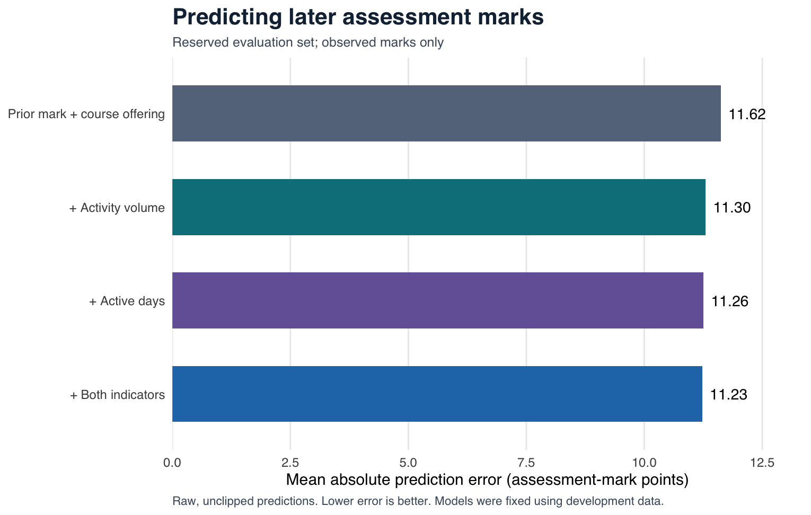
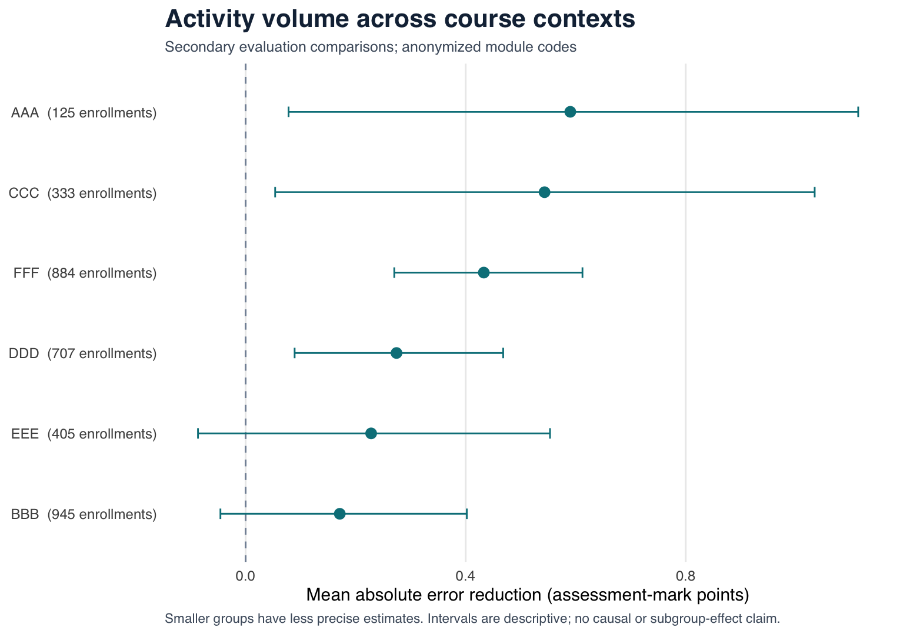

Independent portfolio · Proposed study materials and completed analysis are distinguished in each document.
What Counts as Progress?
Activity Indicators and Later Assessment Performance
Independent research portfolio report · 3 October 2026
Status: Completed first version of the planned indicator analysis, six sensitivity comparisons, and an additional secondary offering check; independent research, not peer-reviewed.
Analysis plan: Local dated plan, version 0.2; not externally preregistered.
Abstract
Learning dashboards often summarize activity in counts, active days, or streaks. How much information do those measures add about later assessed performance once earlier performance and course context are considered? This study examines that question using the Open University Learning Analytics Dataset (OULAD), a 14-day activity window before day 56, and a subsequent tutor-marked assessment. The eligible cohort contains 20,441 enrollments from 19 offerings; 17,019 have an observed target mark. In 3,399 reserved evaluation enrollments, adding click volume reduced mean absolute error from 11.621 to 11.302 mark points: an improvement of 0.319 points (95% learner-cluster bootstrap interval 0.207–0.426), or 2.75% of reference-model error. Six sensitivity comparisons retained positive volume estimates, with varying magnitudes and populations. An additional secondary check on the latest offerings, specified after inspecting the main estimates, also found a positive difference but retained substantial error: volume-model MAE was 15.873 points. Activity therefore added modest predictive information for this assessment criterion. This retrospective result does not establish dashboard efficacy, metric-seeking behavior, learning gains, or transfer.
1. Introduction
A dashboard can make progress visible, but its meaning depends on what is counted. Opening a resource, returning to the platform, and submitting strong coursework represent different kinds of evidence. A useful research question is therefore not simply whether activity predicts success. It is how much a particular activity measure adds to what is already known, under clearly defined conditions.
Prior research shows why context matters. In nine undergraduate courses, Gašević and colleagues found that course-specific models and pooled models differed in predictive power and relevant learning-platform predictors. The same recorded action can have a different role in different instructional settings. Gašević et al., 2016
The timing of evidence matters as well. An apparently early prediction can become misleading if it uses activity or assessment information from later in a course. Recent OULAD work has directly examined this problem through cutoff-first processing and leakage checks. Le, Abel & Laforge, 2026, preprint
This project asks:
How much information do recorded platform activity counts add about later assessed performance beyond prior assessed performance and course context?
The primary comparison concerns click volume. A secondary comparison concerns active days. Their usefulness is assessed through error on reserved learners, expressed in assessment-mark points. The study contributes a reproducible comparison of simple indicators and a transparent account of their limits. It does not claim to introduce these indicators or to be the first study relating activity to academic outcomes.
2. Related work and scope
OULAD is a well-established resource for studying learning-platform activity and academic outcomes. Its original publication describes anonymized course, registration, assessment, and daily interaction tables from 2013–2014. These tables make retrospective comparisons possible while imposing clear limits on what an interaction count represents. Kuzilek, Hlosta & Zdrahal, 2017
Several closely related studies already examine activity and academic performance. Borna and colleagues use OULAD resource-click features, including click quartiles and resources not accessed, to classify course outcomes. Their findings distinguish the challenge of identifying high achievement from identifying withdrawal. Marticorena-Sánchez and colleagues compare prediction across Social Sciences and STEM courses and over time, reporting differences between domains. Together, these studies establish direct precedents for activity-based prediction and course heterogeneity. Borna et al., 2024; Marticorena-Sánchez et al., 2025
Villegas-Ch and colleagues describe OULAD interaction patterns using total clicks, active days, unique resources, activity types, and variability. Their analysis deliberately avoids modeling academic performance or inferring cognitive states. This is especially close overlap in indicator choice. The present project adds a specified later-assessment criterion rather than proposing new activity measures. Villegas-Ch et al., 2026
The methodological overlap also needs to be explicit. Le, Abel and Laforge's recent preprint enforces time truncation before joins and aggregation, keeps learned preprocessing within training data, and examines how later information can inflate apparent early prediction. This project adopts the principle that timing must be audited; it does not present leakage control as a new contribution. The preprint's peer-review status has not been established here. Le, Abel & Laforge, 2026
The narrower contribution is an indicator-specific audit: compare the additional usefulness of two easily displayed activity measures after adjustment for earlier marks and course offering, using a fixed time window, reserved learners, visible missingness, and planned sensitivity analyses. This focused reading does not support a claim of comprehensive novelty.
3. Methods
3.1 Data and provenance
The analysis uses the official UCI OULAD release, acquired on 3 October 2026 under CC BY 4.0. The downloaded archive's SHA-256 checksum is recorded in the provenance file:
f2ed1902616c1fe8d2824d872c0b7d2d72be435bf0124d077044fe4be2c6d3e4
The verified source contains 32,593 registration records and 10,655,280 activity rows. One analysis record is a learner's enrollment in a particular module offering. A learner may contribute more than one enrollment; those records stay together in the evaluation partition and uncertainty calculation.
The interaction table contains daily resource counts. It does not contain dwell time, within-day action order, question correctness, or dashboard exposure. Assessment deadlines and submission dates are distinct fields. The documented data provide no grading or feedback-release timestamp. Thus, earlier-score adjustment is retrospective; it cannot establish that a live dashboard knew that score at the chosen cutoff. Dataset paper and codebook
3.2 Plan and timing
The locally dated version-0.2 plan was fixed after inspecting schedules, schema, missingness, and cohort availability, before inspecting activity–mark associations or fitting models. The initial day-28 proposal supported only one offering under the required prior-assessment rule; day 42 supported 14, and day 56 supported 19 across six modules. Day 56 was selected because it provided the same offering coverage as day 70 while retaining an earlier observation point. This decision used availability rather than estimated predictive performance.
Days are relative to the start of each offering. Activity is observed on days 42–55 inclusive. Day 56 is the cutoff separating that window from eligible target submissions.
3.3 Cohort and assessments
An enrollment is eligible when registration is recorded before day 56 and withdrawal is either absent or not earlier than day 56. Withdrawal on day 56 is retained in the primary analysis and excluded in a planned sensitivity check.
The prior assessment is the latest scheduled tutor-marked assessment (TMA) with a deadline strictly before day 42. Eligibility requires a recorded nonbanked score between 0 and 100 and submission strictly before day 42. Assessment selection follows the schedule, not a learner's most recent submission. Any deadline tie is resolved by the smallest assessment identifier.
The target is the earliest positive-weight TMA with a deadline strictly after day 56, using the same tie rule. Known banked target credit and targets already submitted before day 56 are excluded. Enrollments without a target submission or mark remain in the eligible cohort for missingness reporting. Mark models use observed nonbanked target submissions on or after day 56. Missing marks are not converted to zero.
3.4 Activity measures and record repetitions
| Measure | Operational definition on days 42–55 | Meaning retained |
|---|---|---|
| Total clicks | Sum of the source-reported interaction counts across all eligible activity rows | Recorded platform activity volume |
| Active days | Number of days with positive recorded activity, from 0 to 14 | Frequency of recorded platform activity |
An enrollment with no recorded interaction in the window receives zero recorded activity. This does not establish that no study took place.
The source integrity audit found repeated activity rows. Among 684,147 source rows in the selected eligible window, 51,964 are exact complete-row repetitions beyond their first occurrence. Their origin is unknown. All official rows remain in the primary volume measure. Version 0.2 added an alternative count after collapsing exact complete-row repetitions, as a robustness encoding rather than a correction of presumed errors. This amendment preceded inspection of activity–mark relationships and changed no primary cohort, outcome, or comparison. Exact repetitions do not change active-day counts.
3.5 Models and primary criterion
The reference linear model contains the prior assessment score and course-offering fixed effects. Three comparisons add activity:
| Model | Predictors |
|---|---|
| Reference | Prior score + course offering |
| Volume, primary | Reference predictors + natural log of (1 + total clicks) |
| Consistency, secondary | Reference predictors + active days |
| Combined, secondary | Reference predictors + both activity measures |
The primary result is the reference model's held-out mean absolute error minus the volume model's held-out mean absolute error. Positive values mean fewer mark points of prediction error after adding click volume; negative values mean more error. This criterion evaluates predictive information for the specified assessment. It does not assign a causal effect to clicks or convert them into mastery. Models were fitted by ordinary least squares. Each observed enrollment contributes equally to the metrics, while uncertainty calculations retain the grouping of enrollments within learners. Metrics use raw predictions without clipping them to the assessment's 0–100 range.
3.6 Evaluation and uncertainty
Approximately 20% of learners are reserved for evaluation using a deterministic SHA-256 partition with the documented salt what-counts-as-progress-2026-10-03-v1. The first 64 hash bits, divided by 2^64, determine membership; values below 0.20 enter evaluation. All enrollments for a learner remain in the same partition. Models and any learned preprocessing use development records only. Preparation checks confirmed no learner overlap and no violations of the specified prior, target, or activity chronology.
Uncertainty is estimated from paired held-out error differences using a student-cluster bootstrap with 2,000 replicates and seed 20261003. Learners, rather than individual enrollments, are resampled. The fitted models remain fixed, so the intervals reflect evaluation-sample uncertainty conditional on the development sample, rather than all uncertainty from refitting the entire procedure.
Module-specific error differences are secondary summaries of the fitted models' evaluation performance within each module. The frozen plan also anticipated compatible offering holdouts with module-level effects, because a new offering's fixed-effect coefficient cannot be estimated from an offering absent during fitting. The exact latest-offering implementation was chosen after inspection of the main results and is reported as an additional secondary check, not a replacement primary analysis.
That check retains the primary assessment rules, day-56 cutoff, and days 42–55 activity window. Fitting uses only development learners with observed marks in represented earlier offerings labeled 2013B, 2013J, or 2014B. Evaluation uses only reserved learners in 2014J offerings. Reference predictors are prior score and module code; the three activity additions remain unchanged. There is no learner overlap. Models were saved before this check read its evaluation outcomes, with no subsequent tuning recorded. However, these learners are a subset of the primary evaluation pool, so this is not a fresh independent confirmation. Offering-label order does not certify when earlier grades were available: the absence of grade-release timestamps still prevents a verified simulation of live prediction. Its different cohort and module-level reference also prevent an isolated comparison of temporal generalization.
3.7 Planned sensitivity analyses
The longer-window check observes days 28–55 at the same day-56 cutoff. It retains the primary selected prior and target assessment identifiers, while additionally requiring the selected prior submission before day 28. This restriction can narrow the population. The day-70 check observes days 56–69 and recomputes assessment selection using the same relative rules: the prior deadline and submission must precede day 56, and the target is the first positive-weight TMA due after day 70. Both cohort and target can therefore change; neither check isolates a timing effect in an otherwise identical population.
The remaining planned checks remove zero-weight prior assessments; exclude withdrawal on the cutoff day; add prespecified quadratic prior-score and activity terms fitted using development data; and use the exact-row-collapse volume encoding. Resulting cohort changes are reported below. These checks qualify the primary comparison rather than provide an opportunity to replace it with a preferred result.
4. Cohort preparation and results
4.1 Verified cohort flow
The following counts come from preparation outputs. They describe availability and eligibility, not estimated activity–performance relationships.
| Preparation stage | Enrollment records |
|---|---|
| All source registrations | 32,593 |
| Supported prior and target assessment schedules | 30,059 |
| Registered and not withdrawn before the cutoff | 24,109 |
| Valid prior score submitted before the activity window | 20,506 |
| Eligible after target-related exclusions | 20,441 |
| Selected target submission observed | 17,048 |
| Selected target score observed | 17,019 |
The eligible cohort contains 19,028 distinct learners across 19 offerings of six modules. Target submissions were recorded for 83.40% of enrollments, and target marks for 83.26%. Of the 3,422 missing target scores (16.74%), 3,393 have no target submission record and 29 have a submission record without a mark. These cases remain distinct. Scores among submitters answer a selected-population question; their relationships need not represent learners without observed marks.
| Partition | Eligible enrollments | Observed target marks | Missing target marks | Observed-mark rate |
|---|---|---|---|---|
| Development | 16,342 | 13,620 | 2,722 | 83.34% |
| Reserved evaluation | 4,099 | 3,399 | 700 | 82.92% |
| Total | 20,441 | 17,019 | 3,422 | 83.26% |
4.2 Primary and secondary model comparisons
All four models were evaluated on the same 3,399 enrollments from 3,197 learners with observed target marks. The volume model reduced mean absolute error by 0.319 mark points (95% interval 0.207–0.426). This is a 2.75% relative reduction in prediction error. Its mean absolute error remained 11.302 points on the 0–100 assessment scale, so the additional information is modest in absolute terms.
| Model | MAE | RMSE, secondary | R², secondary | MAE reduction from reference | 95% bootstrap interval |
|---|---|---|---|---|---|
| Reference | 11.621 | 15.155 | 0.186 | — | — |
| Add click volume, primary | 11.302 | 14.721 | 0.232 | 0.319 | 0.207–0.426 |
| Add active days, secondary | 11.256 | 14.683 | 0.236 | 0.365 | 0.250–0.470 |
| Add both, secondary | 11.231 | 14.633 | 0.241 | 0.390 | 0.268–0.505 |
MAE, RMSE, and their differences are in assessment-mark points. R² uses the evaluation cohort's overall mean as its reference. Intervals are paired percentile learner-cluster bootstrap intervals, conditional on fixed fitted models. Active days and the combined model have slightly larger point estimates, but no direct test establishing superiority over click volume is reported.

Figure 1. Mean absolute error in reserved enrollments with observed marks. Lower values indicate more accurate assessment prediction. Raw predictions are used.

Figure 2. Error reductions relative to prior mark plus course offering. Lines show 95% learner-cluster bootstrap intervals. Click volume is the primary comparison; the other two are secondary.
4.3 Module-specific volume comparisons
The six module-level volume point estimates are positive. For BBB and EEE, intervals include zero and negative values. Module labels are anonymized source codes. These descriptive summaries do not constitute a formal test of heterogeneity or establish that one course benefits more than another.
| Module | Offerings | Evaluation enrollments with marks | MAE reduction | 95% bootstrap interval |
|---|---|---|---|---|
| AAA | 2 | 125 | 0.590 | 0.078–1.114 |
| BBB | 4 | 945 | 0.171 | −0.046–0.402 |
| CCC | 2 | 333 | 0.543 | 0.054–1.034 |
| DDD | 4 | 707 | 0.274 | 0.089–0.468 |
| EEE | 3 | 405 | 0.228 | −0.087–0.553 |
| FFF | 4 | 884 | 0.433 | 0.270–0.612 |

Figure 3. Secondary within-module volume comparisons. Smaller evaluation groups have wider intervals; overlap or non-overlap is not used as a test of differences between modules.
4.4 Six planned sensitivity comparisons
The table reports the volume comparison against the corresponding reference model within each scenario. Counts refer to enrollments with observed marks. Changes in cohort, target assessment, or reference-model flexibility limit direct comparisons of improvement magnitudes across rows.
| Scenario | Development / evaluation marks | Reference MAE | Volume MAE | MAE reduction | 95% bootstrap interval | Population or measurement change |
|---|---|---|---|---|---|---|
| Preceding 28-day window | 9,370 / 2,270 | 11.874 | 11.397 | 0.477 | 0.340–0.623 | Days 28–55; same selected assessment IDs, prior submission before day 28; narrower cohort |
| Day-70 cutoff | 12,868 / 3,218 | 9.499 | 9.426 | 0.073 | 0.019–0.128 | Days 56–69; prior/target selection recomputed; cohort and target may change |
| Exclude zero-weight prior work | 12,465 / 3,109 | 9.993 | 9.816 | 0.177 | 0.095–0.263 | Smaller cohort without zero-weight selected prior assessments |
| Exclude withdrawal on cutoff day | 13,620 / 3,399 | 11.621 | 11.302 | 0.319 | 0.207–0.426 | Five eligible enrollments removed; observed-mark fitting/evaluation cohorts unchanged |
| Add quadratic terms | 13,620 / 3,399 | 10.438 | 10.240 | 0.198 | 0.111–0.281 | Same cohort; more flexible reference and activity models |
| Collapse exact complete-row repetitions | 13,620 / 3,399 | 11.621 | 11.303 | 0.318 | 0.208–0.424 | Same cohort; alternative volume encoding only |
The longer-window scenario contains 14,016 eligible enrollments: 11,640 observed marks (83.05%) and 2,376 missing marks (16.95%). The day-70 scenario contains 18,470 eligible enrollments: 16,086 observed marks (87.09%) and 2,384 missing marks (12.91%). The zero-weight exclusion removes 1,655 eligible enrollments, including 1,445 with observed marks. Cutoff-day withdrawal removes three development and two evaluation enrollments, all without observed target marks.
Every volume point estimate remains positive, but the estimated additional information ranges from 0.073 to 0.477 mark points. The larger estimate in the longer window cannot be attributed solely to observing more days, because its stricter prior-submission rule changes the population. Likewise, the smaller day-70 estimate does not isolate a cutoff effect. The exact-row encoding is nearly identical to the primary result, while the quadratic comparison demonstrates sensitivity to the flexibility of the prior-mark reference model.
4.5 Missing outcomes and prediction diagnostics
Missingness is visibly associated with observed differences in the eligible evaluation records. Learners with no target submission record have a median prior mark of 70, 25 recorded clicks, and two active days. Those with an observed target mark have corresponding medians of 80, 81 clicks, and six active days. This is a descriptive selection diagnostic, not a missing-data correction. The five evaluation submissions without marks are too few to characterize reliably. Conditioning on an observed mark remains a material limit.
| Primary model | Raw prediction range | Predictions outside 0–100 |
|---|---|---|
| Reference | 47.052–89.584 | 0 / 3,399 |
| Volume | 39.416–95.630 | 0 / 3,399 |
| Active days | 45.183–97.267 | 0 / 3,399 |
| Both indicators | 41.929–97.602 | 0 / 3,399 |
No primary prediction falls outside the assessment scale. Quadratic sensitivity models produce eight above-100 volume predictions (maximum 104.313), six active-day predictions, and six combined-model predictions. In the zero-weight-prior exclusion, the active-day and combined models each produce one above-100 prediction. No such result was clipped: all metrics use raw outputs. These diagnostics constrain model deployment even when aggregate prediction error improves. The timing-sensitivity models have no predictions outside 0–100.
An independent NumPy least-squares reconstruction reproduced 32 reported MAEs, including the four additional latest-offering fits below, within 1×10⁻⁸. Its maximum absolute discrepancy is approximately 1.06×10⁻¹¹. It also checked sample counts, full-rank fits, and learner separation. This reconstruction checks point estimates; it did not independently reproduce the bootstrap intervals.
4.6 Additional secondary latest-offering check
The earlier-offering fitting cohort contains 8,911 observed enrollments from 8,634 development learners. The latest-offering evaluation contains 1,189 observed enrollments from 1,155 reserved learners. Training coverage is 8,911 observed marks out of 10,911 eligible enrollments (81.67%); evaluation coverage is 1,189 of 1,369 (86.85%), leaving 180 missing evaluation marks. Missing marks receive no substitute score.
| Model with module-level effects | Latest-offering MAE | MAE reduction from reference | 95% bootstrap interval |
|---|---|---|---|
| Prior score + module, reference | 16.379 | — | — |
| Add click volume | 15.873 | 0.506 | 0.365–0.650 |
| Add active days | 15.835 | 0.544 | 0.411–0.675 |
| Add both indicators | 15.788 | 0.591 | 0.450–0.733 |
These intervals use the same fixed-model learner-cluster bootstrap procedure. The positive differences do not remove substantial absolute error. The table below makes this visible by module, particularly BBB, where the volume model still averages 34.287 mark points of absolute error.
| Module | Latest-offering observed enrollments | Reference MAE | Volume MAE | MAE reduction | 95% bootstrap interval |
|---|---|---|---|---|---|
| AAA | 56 | 7.576 | 6.956 | 0.620 | 0.097–1.147 |
| BBB | 290 | 35.516 | 34.287 | 1.230 | 0.921–1.553 |
| CCC | 200 | 10.632 | 10.464 | 0.168 | −0.286–0.599 |
| DDD | 213 | 10.416 | 10.050 | 0.367 | 0.009–0.720 |
| EEE | 158 | 8.106 | 7.957 | 0.149 | −0.174–0.457 |
| FFF | 272 | 11.488 | 11.213 | 0.276 | 0.065–0.485 |
The module intervals are descriptive, without multiplicity correction or a formal test of differences between modules. The combined model produces one raw prediction above 100, at 100.244; the other three models produce none outside 0–100. Predictions remain unclipped. No formal test compares the MAEs of this scenario with the primary scenario: their populations and reference-model contexts differ. The large remaining error, post-primary operationalization, and reuse of a subset of the original evaluation learners qualify this check's evidential weight. It does not establish readiness for future courses or contemporary dashboard deployment.
5. Interpretation and limitations
Recorded activity adds modest information about the selected later coursework mark beyond earlier assessed performance and course context. The primary error reduction is 0.319 points, with error still averaging 11.302 points. Its positive interval supports additional predictive usefulness under the specified evaluation, while its size and the sensitivity analyses qualify the practical interpretation. An activity count therefore warrants a narrower label such as recorded activity volume. These results do not validate it as a complete representation of progress or mastery.
The positive module point estimates provide context, while the uncertain BBB and EEE estimates and changes across sensitivity scenarios argue for reporting the setting and criterion alongside any headline number. The primary analysis evaluates reserved learners in represented offerings. The additional latest-offering check provides a limited secondary view of a different cohort and model context; its substantial remaining error, especially in BBB, qualifies claims about portability. It is not independent confirmation from new learners beyond the original evaluation pool. Generalization to other institutions or a contemporary dashboard remains untested.
Several limits remain regardless of the numerical results:
- Assessment criterion: the outcome is a later coursework mark. It is not an independent transfer test or measured learning gain.
- Selection: the cohort requires prior assessed work, and mark models require an observed later score. Adjustment cannot make missingness automatically ignorable.
- Unobserved study: offline reading, reflection, collaboration, and other learning activities may be absent from the platform record. Low activity can coexist with substantial study.
- Unknown grade availability: submission before an observation window does not demonstrate that the corresponding mark had been released by then.
- Context: course content, schedules, and resource design can affect the meaning of clicks and active days. The data are historical and come from one institution.
- Measurement structure: daily aggregates and unexplained repeated rows constrain interpretation of activity volume.
- Causal scope: no dashboard assignment or displayed-score exposure is recorded. The analysis cannot identify metric-seeking motives, intentional gaming, goal displacement, or a causal effect of activity on learning.
5.1 Prototype rationale and future experiment
The prototype addresses a concrete design choice: should repeated correct answers keep increasing a progress display, or should credit distinguish repeated correctness from correctly answering different items? It uses a single synthetic event history to make two scoring policies reviewable. All-correct credit counts every correct response event, including repeated correct answers to the same item. Distinct-item credit gives one point when an item is first answered correctly and no further credit for correct repetitions of that item. Correct events and different items answered correctly are useful descriptions of these counts; neither establishes mastery. The display should identify what is counted, the observation period, and what evidence is missing, with activity and assessed performance shown separately.
This rationale follows from the modest additional predictive information and the dataset's measurement limits. OULAD records no item-level answer correctness, so the scoring-policy contrast itself is not analyzed in this dataset. It is not an empirical finding that one scoring policy is better. The illustrative events, scores, and interface states are synthetic; the prototype is not a personalized learning recommendation or a deployed prediction system. Its unscored application question is a teaching check, not a validated transfer test.
A future study can randomly assign scoring policies while holding the learning content and starting information constant. A useful behavioral outcome would be selection of familiar repeat practice versus new application problems; a separate transfer assessment would measure whether those choices support the intended learning goal. Engagement and perceived pressure could be secondary outcomes. Recruitment, ethics review where applicable, a prospectively specified analysis, and a suitable sample are still required. No participant study or claim of policy efficacy is included in this artifact.
6. Reproducibility and research transparency
The project preserves source provenance and checksums, schema and integrity checks, versioned plans, cohort and exclusion counts, indicator definitions, evaluation membership rules, fitted outputs, figure data, and independent verification. Version 0.1 is retained alongside version 0.2 and an amendment explaining the repeated-row robustness encoding. The plan is locally dated; no external preregistration is claimed. The frozen configuration's pre-analysis status is historical; run records document execution. Figures here were checked against their aggregate plotting data and numerical tables.
Prototype functional checks confirmed that two correct repetitions of one item produce counters of two and one, respectively; an incorrect answer, explanation view, and unscored application check leave the counters unchanged. Desktop and 390-pixel layout checks found no horizontal overflow, and a basic keyboard check confirmed movement between answer checking and explanation controls. A complete accessibility and screen-reader audit has not been performed. These checks concern interface behavior, not participant learning or scoring-policy efficacy.
Raw learner records and identifiers are excluded from public-facing deliverables. Aggregate artifacts should retain enough detail to reproduce the reported methods without presenting identifiable learner examples. Dataset reuse follows the release's attribution license.
AI assistance was used to research sources, draft this report, support implementation, and check outputs. The applicant must review the cited claims, understand and inspect the analysis, verify numerical results against outputs, and take responsibility for the final submitted artifact. This first version is an independent research report and has not been peer-reviewed.
References
- Kuzilek, J., Hlosta, M., & Zdrahal, Z. (2017). Open University Learning Analytics dataset. Scientific Data, 4, 170171. DOI: 10.1038/sdata.2017.171.
- Gašević, D., Dawson, S., Rogers, T., & Gasevic, D. (2016). Learning analytics should not promote one size fits all: The effects of instructional conditions in predicting academic success. The Internet and Higher Education, 28, 68–84. DOI: 10.1016/j.iheduc.2015.10.002.
- Borna, M.-R., Saadat, H., Hojjati, A. T., & Akbari, E. (2024). Analyzing click data with AI: implications for student performance prediction and learning assessment. Frontiers in Education, 9, 1421479.
- Marticorena-Sánchez, R., Canepa-Oneto, A., López-Nozal, C., & Barbero-Aparicio, J. A. (2025). Unveiling the Differences in Early Performance Prediction Between Online Social Sciences and STEM Courses Using Educational Data Mining. Expert Systems, 42(3), e13837.
- Villegas-Ch, W., García-Ortiz, J., Mera-Navarrete, A., & Govea, J. (2026). Interpretable and explainable analysis of informal learning behaviors in digital education using interaction logs. Frontiers in Education, 11, 1876973.
- Le, N. L., Abel, M.-H., & Laforge, B. (2026). When Can We Trust Early Warnings? Leakage-Excluded Early Outcome Prediction from LMS Interaction Logs. arXiv:2605.25794v1. Preprint.
- Kuzilek, J., Hlosta, M., & Zdrahal, Z. (2015). Open University Learning Analytics dataset. UCI Machine Learning Repository. DOI: 10.24432/C5KK69. Dataset release used here; CC BY 4.0.
Readable copy of docs/Research-Report.md. Participant collection is disabled in the development walkthrough. Full source repository.